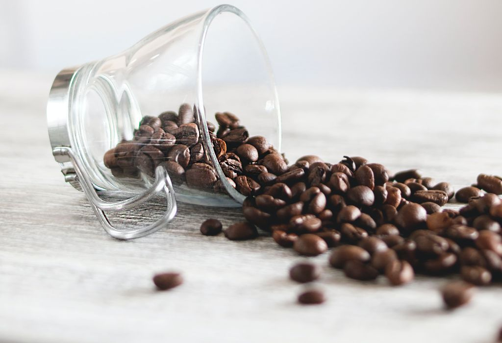

Quiénes somos
Nuestra historia de origen se remonta a la época de universidad, cuando un grupo de compañeros se empezó a juntar para estudiar para los exámenes. Hasta ahí una historia común y corriente, no? Lo que sucedió es que cada vez que ibamos a la casa de fulano, éste nos preparaba un café riquisimo, y uno de nosotros no tuvo la mejor idea de preguntarle: "¿Por qué no abrís una cafetería y te pones a vender café?" Y así señores empezó nuestra historia, con un "why not?
Decidimos juntar lo mejor de cada uno de nosotros para creaer este lugar, un lugar donde puedan venir, pasarla bien, estudiar, charlar, leer, lo que vos quieras, todo acompañado de una rica taza de café.

¿Qué es el café?
El café es la bebida que se obtiene a partir de los granos tostados y molidos de los frutos de la planta del café; es altamente estimulante por su contenido de cafeína.Este producto es uno de los más comercializados del mundo y una de las tres bebidas más consumidas del mundo (junto con el agua y el té).Suele tomarse durante el desayuno, después de este o incluso como único desayuno, aunque también se suele tomar en la merienda, o después del almuerzo o cena para entablar conversaciones o solo por costumbre. Es una de las bebidas sin alcohol más socializadoras en muchos países. El gusto por el café no es espontáneo, sino que debe cultivarse, puesto que su sabor es fuerte y amargo.
Las formas más populares de tomarlo son negro o solo y con leche (con o sin azúcar); también se le suele añadir crema o nata, leche condensada, chocolate o algún licor, es decir, dependiendo de la receta hay diversas formas de prepararlo. Se sirve habitualmente caliente, pero también se toma frío o con hielo.